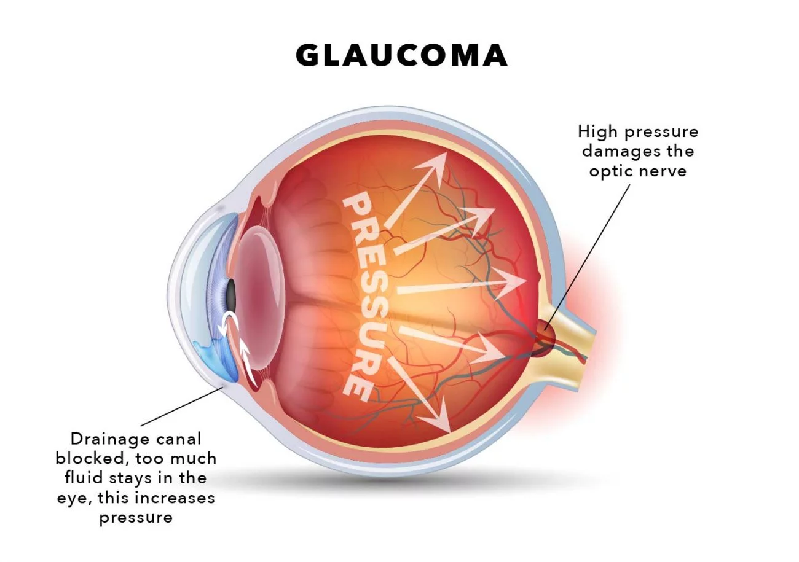

What is Glaucoma?
Glaucoma is a condition that damages your eye's optic nerve, worsening over time. It's often linked to a buildup of pressure inside the eye. Glaucoma can lead to blindness if not treated.
Recognizing Glaucoma
Early glaucoma symptoms can be subtle. Regular eye check-ups are crucial for early detection. Symptoms may include severe eye pain, blurred vision, headache, and rainbow-colored circles around bright lights.
Caring for Yourself with Glaucoma
Tip: Protect your eyes from the relentless assault of glaucoma by wearing sunglasses, eating eye-healthy foods like carrots and spinach, and avoiding eye injuries like the plague.